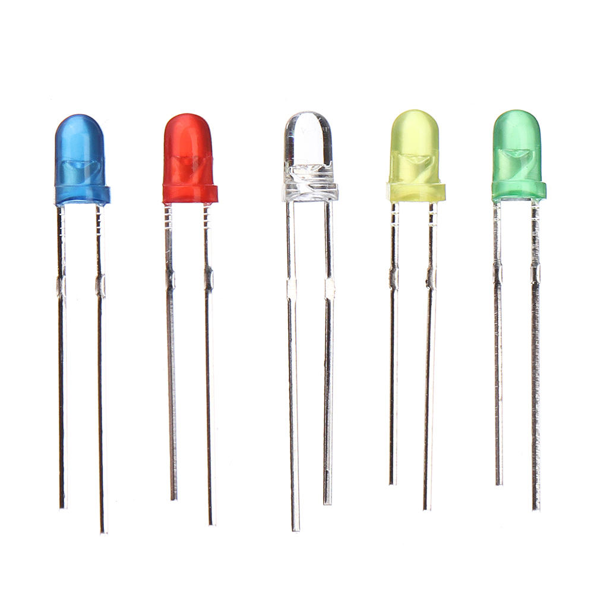
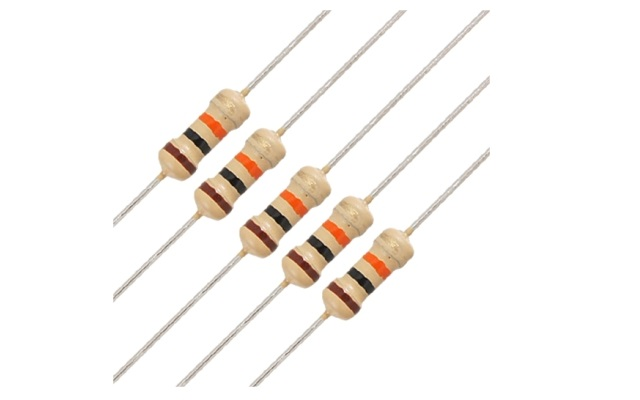
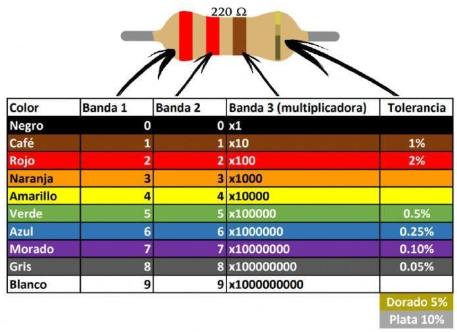
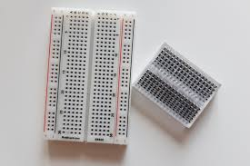
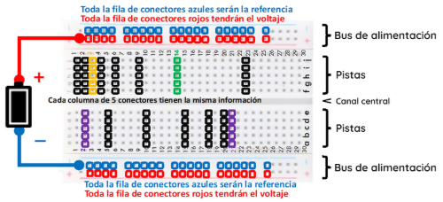
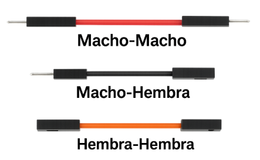
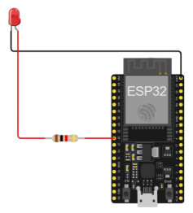

LED
Un LED, o diodo emisor de luz, es un componente electrónico de estado sólido que, al ser polarizado en dirección directa, permite el paso de corriente a través de su unión PN, lo que provoca la liberación de fotones y, por tanto, la emisión de luz visible cuyo color depende del material semiconductor con el que ha sido fabricado.

Un LED sirve para :
Un LED se utiliza para emitir luz visible en distintos colores como rojo, verde, azul o blanco, y es ampliamente empleado en dispositivos como semáforos, linternas, pantallas electrónicas y señalización luminosa. En el ámbito educativo, su uso permite visualizar el flujo de corriente en un circuito, facilitando la comprensión de principios básicos de electricidad y electrónica.
Importante en los circuitos
El LED es un componente polarizado, por lo que debe conectarse correctamente: el ánodo al polo positivo y el cátodo al negativo. Si se invierte la polaridad, el LED no emitirá luz. Además, requiere una resistencia en serie para limitar la corriente eléctrica, ya que un exceso puede quemar el dispositivo.
Resistencia
Una resistencia es un componente pasivo electrónico diseñado para oponerse al flujo de corriente eléctrica dentro de un circuito, controlando la magnitud de dicha corriente mediante la disipación de energía en forma de calor, lo que previene que otros componentes sensibles reciban corrientes excesivas que podrían dañarlos o alterar su funcionamiento.

Una resistencia sirve para:
En contextos educativos y de prototipado, las resistencias son utilizadas principalmente para proteger dispositivos como LEDs y circuitos integrados, ya que al limitar el flujo de corriente eléctrica evitan que estos componentes se vean expuestos a niveles de corriente superiores a sus especificaciones máximas, asegurando así la integridad y durabilidad del sistema.
Código de colores:
El valor nominal de una resistencia se determina mediante un sistema codificado en franjas de colores pintadas en su encapsulado, donde cada color representa un dígito o factor multiplicador de acuerdo con normas internacionales, permitiendo la rápida identificación y selección del valor eléctrico adecuado sin necesidad de medición directa con instrumentos especializados.

Protoboard
El protoboard es un dispositivo aislante reutilizable que integra una matriz interna de contactos metálicos distribuidos en filas y columnas, permitiendo la inserción sin soldadura de componentes y cables para el montaje temporal de circuitos electrónicos.

Un protoboard sirve para:
Facilita el diseño y la prueba rápida de circuitos eléctricos, permitiendo a estudiantes y técnicos experimentar y modificar conexiones sin riesgo de daño, optimizando el proceso de aprendizaje y desarrollo de prototipos.
Partes del protoboard:
Las filas y columnas del protoboard están eléctricamente conectadas internamente, por lo que los puntos de inserción en una misma línea comparten continuidad eléctrica, conocimiento fundamental para un correcto ensamblaje y funcionamiento del circuito.

Jumper
Los cables jumpers, también conocidos como cables de puente o simplemente cables de conexión, son alambres flexibles con puntas metálicas que se utilizan para conectar entre sí los diferentes componentes de un circuito electrónico, como LEDs, resistencias o una batería con el protoboard.

Los cables jumpers sirven para:
Transportan la corriente eléctrica entre puntos del circuito, facilitando la interconexión rápida y segura de dispositivos como LEDs, resistencias o módulos en protoboards y placas de desarrollo.
Tipos de cables jumper
- Macho a macho: pines metálicos en ambos extremos, usados para conectar puntos en protoboards o entre protoboard y microcontroladores.
- Macho a hembra: un extremo pin metálico y otro con conector hembra, ideal para conectar sensores o módulos con pines hembra.
- Hembra a hembra: conectores hembra en ambos extremos, utilizados para unir módulos con pines macho.

Pasos Teóricos para Encender un LED con ESP32
Encender un LED con el ESP32 es una práctica básica para aprender a controlar dispositivos electrónicos con un microcontrolador.
- Selección del pin GPIO
El ESP32 dispone de múltiples pines GPIO configurables como entrada o salida digital; para controlar un LED se selecciona un pin de salida, por ejemplo GPIO 23, que suministrará el voltaje necesario para la activación del LED. - Conexión física del LED
El ánodo (pierna larga) del LED se conecta al pin GPIO 23, el cátodo (pierna corta) a una resistencia limitadora de corriente (220 Ω), y la resistencia a tierra (GND) para proteger el LED de sobrecorriente. - Configuración del pin como salida
En el código, mediante la función pinMode(23, OUTPUT); se establece el pin GPIO 23 como salida digital para controlar el estado del LED. - Control de encendido y apagado
El LED se enciende enviando un nivel lógico alto (digitalWrite(23, HIGH);) y se apaga con un nivel lógico bajo (digitalWrite(23, LOW);), controlando así el flujo de corriente hacia el dispositivo. - Carga del programa
El código se compila y carga en el ESP32 a través del Arduino IDE usando conexión USB, permitiendo la ejecución automática del control del LED según la programación. - Gráfica
Encendido de un led: https://wokwi.com/projects/437181775690342401